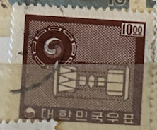
| SOURCE | TITLE| IMAGE MATCH | click to source page |
| HipStamp | Korea Scott 368 used drum stamp | Asia - South Korea, General Issue Stamp / HipStamp | 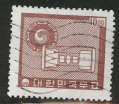 |
| eBay | Korea 368 used | eBay | 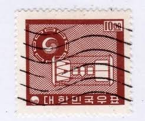 |
| eBay | Korea 368 used | eBay | 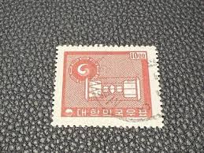 |
| eBay | Korea - 1961 -1962 National Symbols | eBay | 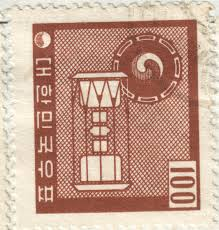 |
| Shutterstock | Korea 1964 Stamp Printed Democratic Peoples Stock Photo 75922837 | Shutterstock | 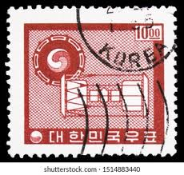 |
| eBay | Brown Korean Stamps for sale | eBay | 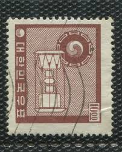 |
| Find Your Stamps Value | Value of 구글 외삽 최적화(TG:e10838).jts stamps | 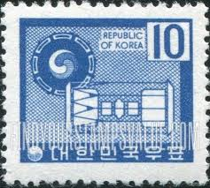 |
| Alamy | Ancient postal hi-res stock photography and images - Alamy | 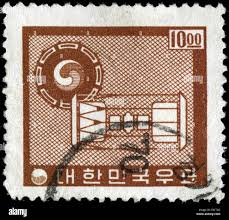 |
| eBay | North Korea Stamps | eBay | 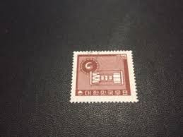 |
| Lamas Bolaño | SELLOS DE COREA DEL SUR 1962 - ANTIGUO RELOJ DE ARENA Y EMBLEMA COREANO - 1 VALOR - CORREO | 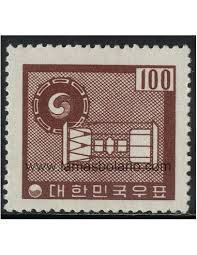 |
| Yesterday's Change | 1963 & 1964 Korean 5,10 & 20 Won Stamps w/Cancel | 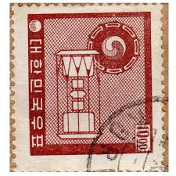 |
| eBay | Korea SC 339-42 MNH (10guk) | eBay | 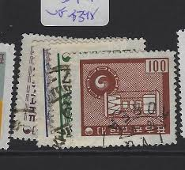 |
| Todocolección | Sellos Antiguos de Corea | Compra venta en todocoleccion | 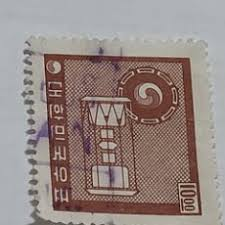 |
| eBay | 1)1962 Korea Scott# 368, Ancient Drums (2)1968 Rep Of Korea Nat'l Flag Stamps | eBay | 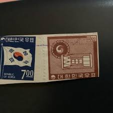 |
| eBay | Korea 1962, KPC #203a, Ordinary Paper Series 10wn, Imprint Block of 4, MNH | eBay | 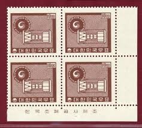 |
| Todocolección | sello corea - republic of korea 50, ciervos, fa - Buy Antique stamps of Korea on todocoleccion | 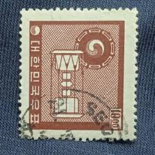 |
| eBay | Korea #368, 518 used | eBay | 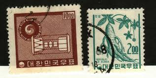 |
| Bunjang Global | Stamp) Seoul National University 20th Anniversary Commemorative Stamp / 1966 #우표,#서울대학교,#개교20주년,#1966 on Bunjang Global Site. | 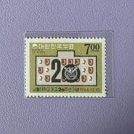 |
| Stamp Auction Network | Daniel F. Kelleher Auctions, LLC Sale - 695 Page 37 | 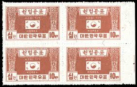 |
| eBay | South Korea 1963 MI 388-390 MNH VF | eBay | 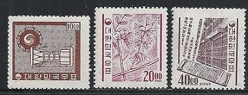 |
| eBay | Korea #249, 260 used | eBay | 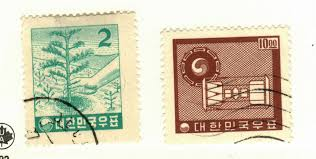 |
| Find Your Stamps Value | Value of 50 napa para stamps | 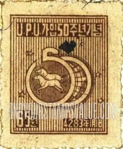 |
| eBay | South Korea Stamps:1970 Mechanization of Postal System. Block of 4. MNH | eBay | 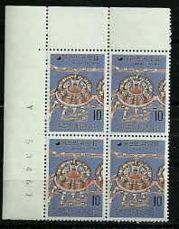 |
| eBay | Korea Stamps # 115 MLH VF | eBay | 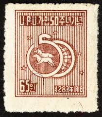 |
| 용준 이 (jatahari0101) – Profile | Pinterest | 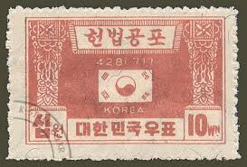 | |
| eBay | Korea #368-9,522 used on paper CV$6.10 | eBay | 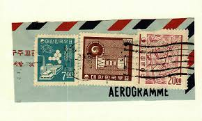 |
| eBay | South Korea: 1976 USA Bicentennial Set of 5. Blocks of 8. Mint Never Hinged. | eBay | 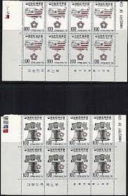 |
| Find Your Stamps Value | Value of queen elizabeth 2 1/2 stamps | 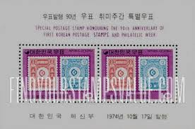 |
| eBay | Souvenir Sheet Stamps for sale | eBay | 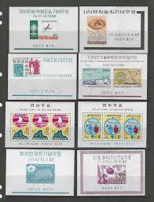 |
| eBay | Korea Postage Stamp Scott 183, Used!! K368 | eBay | 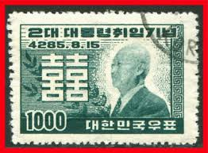 |
| eBay | Korea Sc 223/326a MNH. 1955-61 issues, 3 cplt sets VF | eBay | 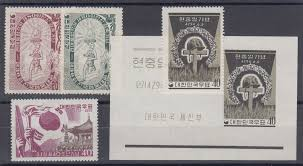 |
| HipStamp | Search "Korea (South Korea) 2024" / HipStamp | 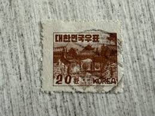 |
| eBay | Korea Scott 232-234 (1956) Mint NH F-VF Complete Set, CV $42.50 C | eBay | 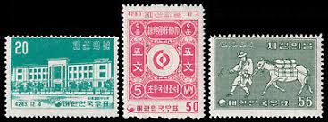 |
| Alamy | Korea election 1948 hi-res stock photography and images - Alamy | 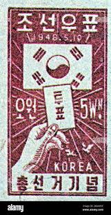 |
| eBay | Korea collection of souvenir sheets MNH | eBay | 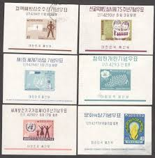 |
| HipStamp | Korea: 1000 Won Supreme Court Tax Stamp (23786) | Asia - South Korea, General Issue Stamp / HipStamp | 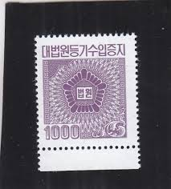 |
| postbeeld.com | Stamps from Korea, South - PostBeeld - Online Stamp Shop - Collecting | 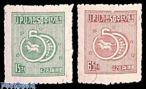 |
| eBay | Korea Scott 232-234 (1956) Mint NH F-VF Complete Set, CV $42.50 C | eBay | 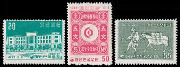 |
| eBay | Korea-Stamp.New 1st 5Year Economic Plan, 2nd Issue Set Block of 4 명판1963 NH | eBay | 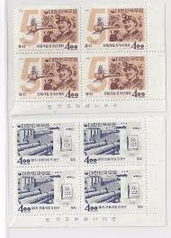 |
| Champion Stamp | Mint, NH - Champion Stamp | 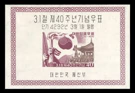 |
| HipStamp | Korea, Postage Stamp, #338-340, 342 Used, 367B Mint No Gum, 1961-66 | Asia - South Korea, General Issue Stamp / HipStamp | 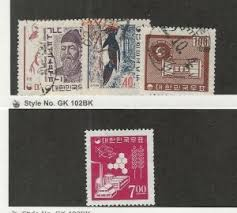 |
| eBay | Korea #365-6,368 used CV$4.80 | eBay | 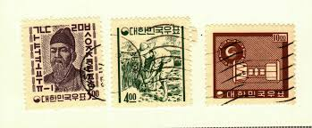 |
| eBay | Original Gum Souvenir Sheet Korean Stamps for sale | eBay | 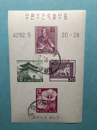 |
| Lee Clark Stamps | Lee Clark Stamps: Store - '' Lots | 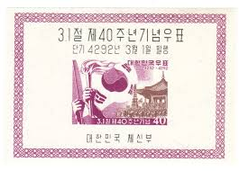 |
| eBay | KOREA , SCOTT$ 650, MNH | eBay | 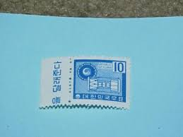 |
| Found these in my grandpa's old wallet, does anyone know anything about these or what they are worth? : r/askStampCollectors | 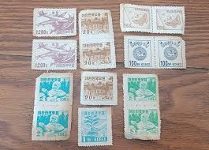 | |
| eBay | South KOREA 1950 Ma-Pae 50th Anniv. of Korea in UPU set Scott # 114-114 mint MNH | eBay | 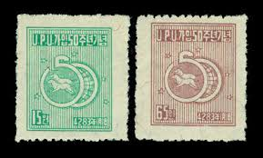 |
| 4StampSales | Germany - 1959 Beethoven Hall Opening - 5 Stamp Souvenir Sheet MLH - Scott #804 | 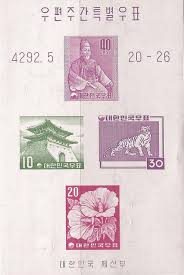 |
| eBay | South Korea Stamps: 1950 50th Ann. of Korea's Entrance to UPU Mint Non Hinged. | eBay | 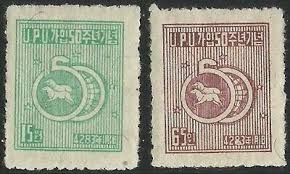 |
| HipStamp | Korea Scott 291B used 1959 souvenir sheet CV$12 | Asia - South Korea, General Issue Stamp / HipStamp | |
| Korea Stamp Society | A note on perforation varieties on North Korean stamps — Korea Stamp Society | |
| eBay UK | Used Elizabeth II (1952-2022) Era Korean Stamps for sale | eBay UK | |
| Korea Stamp Society | 1959 "Peaceful Reunification of Korea" stamps: real, fake, or a reprint? — Korea Stamp Society | |
| Find Your Stamps Value | Mural from Ancient Tomb, Larger Design - 고분벽화, 큰 디자인 1000wn Green stamp price, value | |
| Cherrystone Auctions | Rare Stamps and Postal History of the World - May 7-8, 2024 - KOREA | |
| spanjersberg.net | Another type of Korean postage due slip – Korean Revenue Stamps | |
| eBay | South Korea MNH Lot: Singles, Souvenir Sheets & Booklets. SCV $124 | eBay | |
| eBay | South Korea Stamps:1962-6 1st Five Year Plan Issue. Mint Hinged (10) | eBay | |
| Bunjang Global | Dangun Wanggeom Special Stamp, Full Sheet Stamp, 2008 #단군왕검,#단군,#왕검,#단군왕검특별우표 on Bunjang Global Site. | |
| Alamy | Postage stamps from South Korea in the Definitive series issued in 1977 Stock Photo - Alamy |